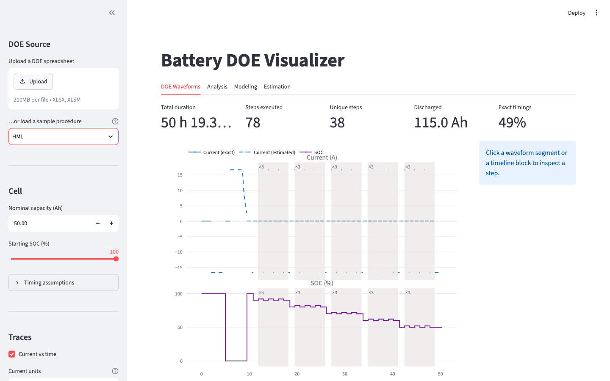

Battery Characterization Suite
Four Python tools that take a lithium-ion cell from a test plan on a spreadsheet to the parameters a battery management system's model needs, with every analysis checked against a simulated cell whose true values are known.
Key result
The hysteresis tool sees only what a cycler exports (time, current, voltage, temperature) and recovers the simulated cell's state of charge, open-circuit voltage and hysteresis to within the errors on the right. Hysteresis on this cell is 13 to 24 mV, so a worst case of 0.53 mV is a few percent of the quantity being measured.
These numbers are for a synthetic cell with known ground truth. They show the analysis is correct; they do not predict its accuracy on a real cell, which will be worse and can only be measured by running it on real data.
| Recovered quantity | Samples | Max error | RMS error |
|---|---|---|---|
| State of charge | 56,226 | 0.020 %SOC | 0.013 %SOC |
| Open-circuit voltage | 66 rests | 0.899 mV | 0.264 mV |
| Hysteresis | 24 pulse pairs | 0.529 mV | 0.306 mV |
Context and role
In Summer 2026 I was an electrical engineering intern in the battery research group at Maruti Suzuki, in India. The group was characterising lithium-ion (LFP) cells from two suppliers, three cells each, to support cell selection for an EV battery. I wrote the Python that automated the analysis of those DCIR, HPPC and capacity tests: processing more than 100,000 pulse events, producing 30+ engineering comparison plots for supplier benchmarking, and fitting 1RC and 2RC equivalent-circuit models to the experimental data to correlate simulated against measured voltage response.
None of that experimental data can be published. What is public is this toolkit: the same analysis, generalised, stripped of anything supplier-specific, and validated against a synthetic cell simulator instead. Maruti Suzuki granted permission to publish it on my GitHub. I am its sole author.
Two things to keep apart. The internship work analysed measured cells; its results are confidential. Every figure and number on this page comes from the public toolkit running on a simulated cell with known ground truth.
Problem and constraints
A battery management system predicts cell voltage, state of charge and available power from a model. A Thevenin equivalent circuit needs an open-circuit voltage curve OCV(z), a series resistance R0, one or more RC pairs (Ri, τi) and a hysteresis term. Those values come from bench tests on real cells, and most of the engineering effort is in getting them out of the raw data honestly.
The test itself arrives as a design-of-experiments spreadsheet written for people, not parsers: headings differ between suppliers, cut-off criteria are free text, steps repeat by reference, and cells are merged down whole blocks. Misreading one repeat in an 86-hour test costs three and a half days of channel time.
On the measurement side, the hazards are quiet. Sign, unit and capacity errors never crash anything; they produce a plausible chart with the wrong answer. So does an open-circuit voltage read before the cell has finished relaxing. And the quantities of interest are small: hysteresis is 5 to 30 mV sitting under an I·R overpotential three to six times larger, so measuring it in the wrong place returns the overpotential instead.
What I built
Four tools. Each runs on its own from the command line, and the first hosts the other three in a Streamlit hub.
doe_visualizer
Parses a DOE spreadsheet into the current-versus-time waveform the cycler will run, so a test can be checked before a cell goes on a channel. Hosts the Analysis, Modeling and Estimation tabs.
Input: the test plan (.xlsx). Output: the waveform, step table and validation report.
dcir_analysis
Averages per-cell DCIR sweeps, splits charge from discharge, holds three factors and sweeps the fourth, cross-checks every row against Ohm's law, and writes a plain-language sensitivity report.
Input: supplier DCIR workbooks. Output: six figures and the report.
hml_analysis
Coulomb-counted state of charge, open-circuit voltage at every relaxation, and the charge/discharge hysteresis loop per SOC. Ships the cell simulator the whole suite is validated against.
Input: a cycler export. Output: OCV curves, hysteresis tables and minor-loop figures.
parameter_estimation
Segments arbitrary pulse data, then fits a shared 1RC to 5RC Thevenin model across all pulse windows by bounded nonlinear least squares, with hold-out scoring and per-parameter standard errors.
Input: current and voltage traces. Output: R0, Ri, τi, their uncertainties, and a fit report.
Who uses the outputs: a test engineer checks the waveform before committing a channel; a cell or BMS engineer takes the OCV curve, hysteresis and RC parameters into a cell model; and the Ohm's-law and sensitivity reports go to whoever has to decide whether a supplier's numbers are internally consistent.
Engineering decisions and tradeoffs
One shared fit across all pulse windows
The estimator does not fit each pulse separately and average. It fits one parameter set to every pulse window at once with scipy.optimize.least_squares (trust-region reflective, bounded, sparse Jacobian). One set of parameters has to explain every pulse, which is what a BMS model has to do too, and the per-parameter standard errors come from a single well-posed problem. The cost is that a data region the model cannot describe pulls the whole fit; hold-out scoring on withheld windows is there to catch that.
RC branches as a zero-order-hold recurrence
Each RC branch is integrated as a discrete first-order filter, vi[k+1] = ai vi[k] + Ri(1 − ai) I[k] with ai = exp(−Δt/τi), evaluated with scipy.signal.lfilter. It is exact for piecewise-constant current, which cycler data is, and fast enough to sit inside the optimiser's inner loop.
Segmentation from the signal, not from row numbers
Which segment is a pulse, which is an SOC transition, and where each rest ends are all detected from the current trace, because hard-coded row numbers break on the next file. The current-sign convention is detected from the data as well: the first long non-zero segment must be the reference charge, and getting it wrong would run every SOC backwards.
Two backends that cannot share a process
hml_analysis keeps a utils.py at its root and dcir_analysis has a utils/ package. Put both on one sys.path and import utils silently resolves to whichever loaded first. Rather than rename my way out, the hub launches each as a subprocess with its own working directory, and they return results as a versioned bundle of CSV files plus a manifest. Integration tests launch the real backends and feed their output through the consuming code, so a renamed column on either side fails in CI instead of in the app. battery_ecm is the exception: it is a proper package that claims one top-level name, and a test asserts that only analysis/ecm.py may import it.
A DOE parser that reads spreadsheets written for people
Header detection rather than fixed columns, a step vocabulary, a small grammar for free-text cut-off criteria, and resolution of repeat-by-reference and merged cells. The waveform simulator's voltage model is deliberately crude: it only has to decide when a step terminates. Predicting voltage is the equivalent circuit's job.
Demonstration
Everything below was produced on 22 September 2026 by cloning the public repository, running scripts/generate_sample_data.py and then the tools, on the synthetic data that script writes.

parameter_estimation output, redrawn from the repository figure; original PNG.{kind=link}
hml_analysis output; original PNG.{kind=link}
hml_analysis output; original PNG.
{kind=link}
- Entry curve
- Charge branch and OCV
- Discharge branch and OCV
Educational simulation: what a 2RC equivalent circuit does to a pulse
A simplified Thevenin model, computed in this page with the same zero-order-hold recurrence the estimator uses, at a fixed open-circuit voltage of 3.700 V. A 10-second discharge pulse is followed by 50 seconds of rest. This is not the estimator and not measured data; it is here to show what the parameters mean.
- Instant drop, I·R0
- 24.0 mV
- Minimum voltage
- 3.628 V
- Still to relax at 60 s
- 3.8 mV
- τ1 = R1C1
- 3.0 s
- τ2 = R2C2
- 40 s
The plot shows the default parameters (I = 2 A, R0 = 12 mΩ, R1 = 18 mΩ, C1 = 167 F, R2 = 30 mΩ, C2 = 1333 F). With JavaScript enabled the sliders recompute it.
Reading the plot: the vertical step at the start of the pulse is I·R0; the curved sag during the pulse is the two RC branches charging; the step at the end of the pulse is R0 again; the slow return toward OCV is the branches discharging with time constants τ1 and τ2. The residual at 60 s is why the real tool reads OCV only at the end of long rests and reports the undecayed part as an irreducible residual.
Validation and results
Recovering what the analysis was never told
The HML dataset is produced by simulating a cell model against a test schedule, so the simulator knows the true state of charge at every sample and the true equilibrium voltage each rest was relaxing toward. The analysis sees only the columns a cycler exports. The table at the top of this page is the result; this is the actual output of the validation script on my machine.
python scripts/validate_hml_against_truth.py22 Sep 2026, clean clone, Python 3.13dataset hml_analysis/input/synthetic_hml.xlsx
protocol Supplier HML characterisation
capacity 5.00 Ah nominal, 4.9991 Ah removed by the conditioning discharge
charge sign detected +1, true +1 OK
Recovery error (analysis minus truth)
------------------------------------------------------------------------
state of charge n=56226 max 0.020 %SOC rms 0.013 %SOC
56226 of 61116 samples have known SOC; the rest precede the reference charge
open-circuit voltage n=66 max 0.899 mV rms 0.264 mV
hysteresis n=24 max 0.529 mV rms 0.306 mV
Irreducible OCV extraction residual: 1.640 mV -- the polarisation still
undecayed at the end of a finite rest. A floor set by the test
protocol, not by the analysis.
The 1.640 mV irreducible residual is polarisation that has not decayed by the end of a finite rest. It is set by the rest length in the test protocol, so longer rests would reduce it and better code would not.
Recovering a known circuit from noisy data
The estimator is checked by round trip: simulate a known circuit with the forward model, add Gaussian noise, fit, compare. The forward simulator and the estimator are separate code paths. In both cases the fit RMSE lands on the noise that was added; a fit that went below the noise floor would be fitting the noise.
| 2RC, 0.5 mV noise | 3RC, 1.0 mV noise | |
|---|---|---|
| Worst parameter error | 1.07 % (τ1) | 4.74 % (τ1) |
| Fit RMSE | 0.4946 mV | 0.9889 mV |
| Noise floor | 0.5000 mV | 1.0000 mV |
Full output of the 2RC round trip
python scripts/demo_ecm_roundtrip.py --order 2 --noise-mv 0.522 Sep 20262RC model, 3 pulses, 0.5 mV measurement noise
solver: `ftol` termination condition is satisfied.
parameter unit true fitted error %
R0 Ω 0.012 0.012036 0.30288
R1 Ω 0.018 0.018017 0.092634
tau1 s 3 3.032 1.0654
R2 Ω 0.03 0.029946 0.17997
tau2 s 40 40.082 0.20379
fit RMSE 0.4946 mV over 3 window(s), 1495 samples
holdout RMSE -- no holdout window
noise floor 0.5000 mV -- the residual cannot go below this
What the tests check
There are 1,173 automated tests across the four tools. The count is not the point; what they cover is. Unit tests pin the sign, unit and capacity conventions at the one place each is converted, the DOE grammar (headers, step vocabulary, cut-off criteria, repeat resolution), segmentation edge cases, and the estimator's recurrence against closed-form solutions. Forty-six integration tests launch the real analysis backends as subprocesses and feed their bundles through the consuming code, so a contract change on either side fails in CI. A layering test asserts which modules may import battery_ecm. The DCIR tool's Ohm's-law cross-check runs on every row of every input as an integrity gate, and reports the largest deviation.
Limitations and next steps
These are the repository's own stated limitations, kept here because they bound what the results above mean.
- No real cell data is included. Every dataset is simulator output. The synthetic cell reproduces the effects the analyses look for (hysteresis that saturates with excursion size, resistance that rises as the cell cools) but it is not fitted to any measured chemistry. Recovery accuracy on real data will be worse.
- The DCIR tool does not measure resistance from a raw trace. It reads the supplier's reported DCIR, re-derives each value from the pulse endpoints as an integrity check, then averages and reports.
- Coulombic efficiency is assumed to be 1, and nominal capacity is an input, so the SOC axis is only as accurate as the capacity supplied.
- The fitted equivalent circuit has no temperature dependence and no hysteresis state; the saturating hysteresis model exists only in the simulator.
- Only DCIR and HML have analysis backends. HPPC, GITT, rate-performance and OCV procedures parse and simulate as DOEs but have no analysis tool behind them. Ageing is out of scope.
Next steps that follow from those: extract DCIR directly from raw pulse traces so the Ohm's-law check becomes a measurement path as well; fit R0(T, z) and Ri(T, z) across a temperature and SOC sweep to produce the lookup tables a BMS loads; add a hysteresis state to the fitted circuit and identify it from the HML output; and build the HPPC and GITT backends, which would reuse most of the rest-detection code.